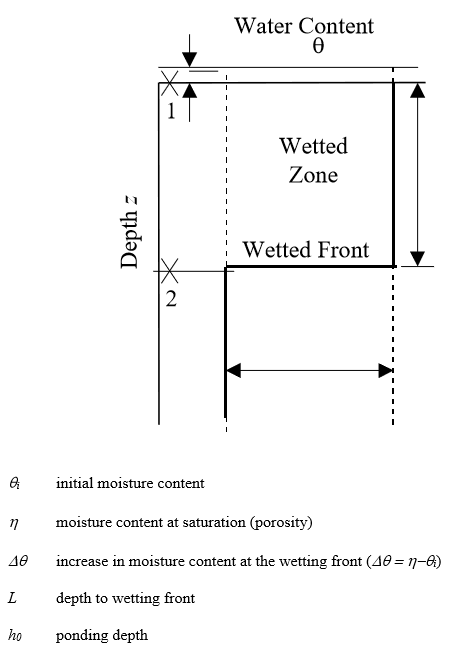
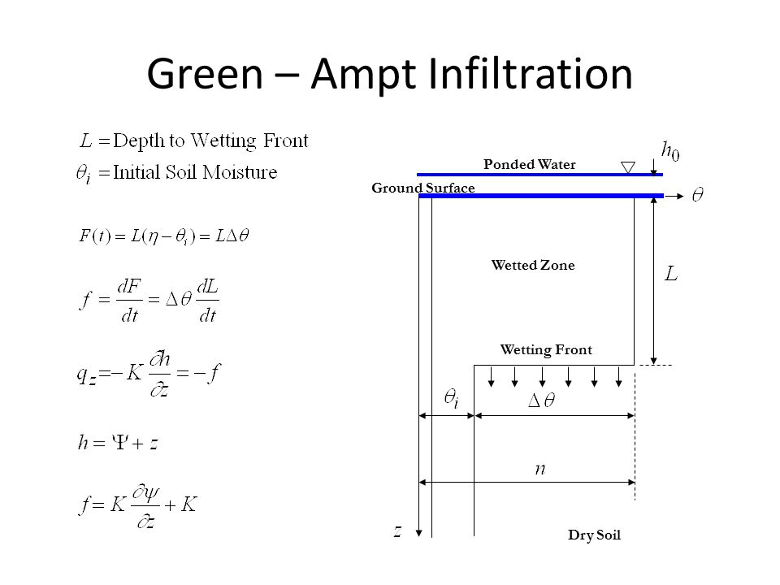
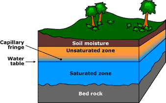

3/8/2019 Notes¶
Did a quick run through of some soil types: alluvial, colluvial, lusts, glacial till, etc.
Rainfall Infiltration into the Ground¶
Richards Equation (PDE)¶
\(\frac{\partial \Theta}{\partial t} = \frac{\partial}{\partial z} \left(D(\Theta) \frac{\partial \Theta}{\partial z} \right) + \frac{\partial K(\Theta)}{\partial z}\)
Looking at the equation, \(\Theta = f(t,z)\). We have some bounding cases.
Case 1: Supply Limited
\(\Theta(t,0) < \zeta\) (not saturated at surface) \(q(t,0) = -i(t)\)
Case 2: Transport Limited
\(\Theta(t,0) = zeta\) (Saturated at the surface; ponded) \(Psi(t,0) = h(t)\) (pressure, Boundary Condition)
Given the complexity of this problem, we want to find a simplification. Luckily some badass people back in 1911 found an exact analytical solution of Richard’s equation in and idealized approximate condition. It’s called Green-Ampt Equation.
We make an assumption that there is a clear, step-wise wetted front. Having that wetted front, we know the exact solution for this simplified problem.
ADD IN CONSERVATION LAWS FROM THE NOTES HERE
Infiltration Calculation¶
For a steady rain rate:
Case 1: Supply Limited (\(t \leq t_{p}\))
Not saturated at surface, \(f = i\) (equals rain rate)
Case 2: Transport Limited (\(t \geq t_{p}\))
Ponded (saturated) at the surface… need Green-Ampt, infiltration depends on soil-water hydraulics
- Potential Infiltration (\(f \ast\) or \(F \ast\)):
Infiltration under ponded conditions (Like Green-Ampt Equation)
Potential Infiltration¶
Application
Drawing a graph for f* to push t to t_o, where we want our zero to be at a time such that
- Compute \(t_{p}\)
- Compute \(t_{o}\)
- Compute Infiltration
- for \(t<t_{p}\)
- \(f(t) = i\) and \(F(i) = i\times t\)
- for \(t > t_{p}\)
- \(f(t) = f \ast (t-t_{o})\) and \(F(t) = F \ast (t-t_{o})\)
Soil Properties¶
Soil Porosity, \(\zeta\), is defined by:
\(\zeta = \frac{V_{v}}{V}\)
where:
- \(V_{v}\) is the pore volume,
- \(V\) is the total volume
Soil Water Content, \(\Theta\), is defined as:
\(\Theta = \frac{V_{w}}{V}\)
where:
- \(V_{w}\) is the volume of water in the control volume
- \(V\) is the total volume of the control volume
Rule of thumb:
\(\Theta_{r} \leq \Theta \leq \zeta\)
Check out the diagram below for vocab for different locations. In the saturated zone, all pore space is filled with water, ie no water.
Soil Water Movement¶
Drawing a pic on the board to work toward "Darcy Flux".
- Darcy Flux, with length, L, over time, T, is represented as:
- \(q = \frac{Q}{A}\)
Conservation of Mass¶
\(\frac{\partial \Theta}{\partial t} = \frac{\partial q}{\partial z}\)
Conservation of Energy¶
- Total Hydraulic Head (\(h\) with length L)
- \(h = \frac{P_{c}}{\gamma} + z\)
- where:
- \(P_{c}\) is the Pressure term
- \(\gamma\) is the unit weight (specific weight) of water (\(\gamma= \rho \times g\))
- \(z\) is the elevation
Note
We can ignore the term \(\frac{v^{2}}{2g}\) because velocity is really really small compared to the terms in the energy equation.
- The first term is commonly thought of as the suction pressure (negative), and called the “matrix or capillary potential” or \(\Psi (\Theta)\).
- \(h = \Psi (\Theta) + z\)
Conservation of Momentum¶
- Conservation of momentum for groundwater flow is refered to as Darcy’s Law:
- \(q = -K(\Theta) \frac{\partial h}{\partial z}\)
- where:
- \(K(\Theta)\) is the hydraulic conductivity
Note
HOMEWORK \(q = - \overline{K(\Theta)} \frac{\Delta h}{\Delta z}\)
1-D Unsaturated Flow¶
- Combine conservation of mass and momentum equation:
\(\frac{\partial \Theta}{\partial t} = - \frac{\partial q}{\partial z} = + \frac{\partial}{\partial z} \left[ K(\Theta) \frac{\partial h}{\partial z} \right]\)
…
simplifying to the Richard’s Equation
…
\(\frac{\partial \Theta}{\partial t} = \frac{\partial}{\partial z} \left(D(\Theta) \frac{\partial \Theta}{\partial z} \right) + \frac{\partial K(\Theta)}{\partial z}\)
…
written another way
…
\(D(\Theta) = K(\Theta) \frac{\partial \Psi(\Theta)}{\partial z}\)
Photos of Brooks-Corey...